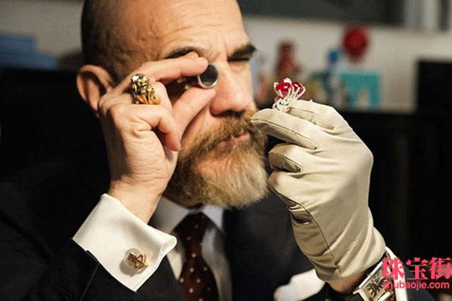
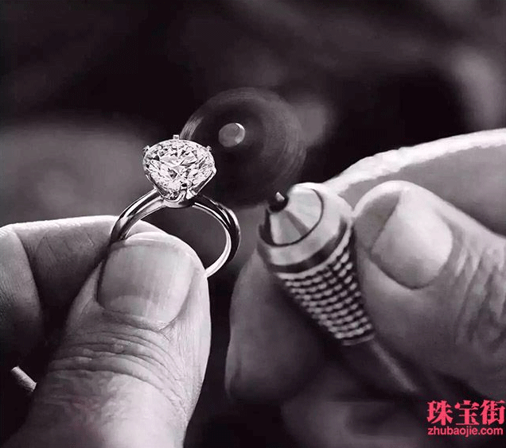

日2017-03-30 10:24:05出处:珠宝街点击:99870次>
不久后的将来,大量公可能再不需要固定员工。因为这些公司可以把具体工作任务发布到网上,由全世界的巧手能人来竟标完成。同样,个人想获得的一些产品和服务,也可以通过这种方式来获得。
这就是众包模式一共享 经济范畴中的一一个具体应用形势。
去年年底,威海市企业的‘’最活跃的珠宝 玉石设计众包互动社区和交易平台”项目,获得中国海归创业大赛优胜奖。
整个3月份,山东珠宝匠都在忙着为一-个名为“珠宝匠”的网站4月份的上线做准备。这个网站有点特别,只有很少企业自身的新闻和产品介绍。最主要的板块是消费者需求信息发布,和签约设计师、普通珠宝设计爱好者的产品展示。
网站有一一个非常响亮的口号:人都是设计师。
就是这样一个网站,获得了去年年底的中国海归创业大赛优胜奖。她正努力把“珠宝匠”网站打造为中国最活跃的珠玉石设计众包互动社区和交易平台。
“在我们的网站和APP中,不恍专业设计师,所有用户都可以自己设计珠宝首饰并出售。用户想要什么样式的珠宝玉石,也可以发布在网上,其他用户竞标进行设计。”杨琼媛说,这种强调用户参与、需求驱动的高互动性平台,就是众包模试。
会”期间,该公司签约入驻高新技术创业服务中心,借助“孵化器”里的各项扶持政策,在威海这片创业土地上生根发 会“期间，该公司签约入驻高新技术创业服务中心，借助”孵化器“里的各项扶持政策，在威海这片创业土地上生根发 持。